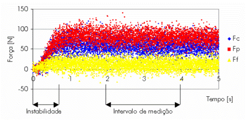
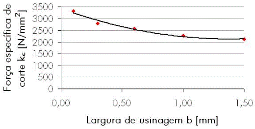

OBJETIVOSCom a finalidade de obter dados para a otimização, tanto técnica quanto econômica, do processo de fresamento, o grupo SIMUS desenvolve trabalhos de simulação a partir dos dados obtidos no torneamento cilíndrico, já que esse processo possui maior facilidade para a obtenção de dados do que no próprio fresamento, desde que as devidas considerações sejam feitas na interpretação destes. PROCEDIMENTOS Nos ensaios de torneamento do Ferro fundido cinzento GG25 com insertos
de cerâmica, são coletados dados como profundidade de corte, ângulo
de direção do gume, forças de usinagem, desgaste do
flanco, e analisada a forma como esses parâmetros evoluem e influenciam
o processo.
 Conhecendo as forças de usinagem é possível obter uma análise dinâmica que descreve a vibração da peça no processo utilizando um software de elementos finitos. Quanto à força de corte no fresamento, podemos então predizê-las através do método do Kienzle, que relaciona as características do material, a seção de corte e a componente da força de usinagem correspondente. RESULTADOSA partir dos resultados dos experimentos constatou-se que a força específica de corte apresenta variação com o aumento da largura de usinagem, conforme mostra o gráfico abaixo. Este comportamento pode ser explicado pela forma do cavaco para esta condição onde o raio de quina da ferramenta (r = 1,2 mm) tem uma dimensão maior que a profundidade de corte.

|